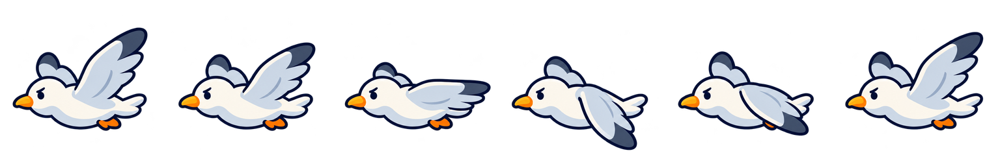

<!doctype html>
<html lang="en">
<meta charset="utf-8"><meta name="viewport" content="width=device-width, initial-scale=1">
<title>Seagull flying animation</title>
<style>body{margin:0;padding:24px;background:#eaf6fb;color:#28445b;font:16px system-ui}main{max-width:760px;margin:auto}canvas{display:block;width:256px;height:256px;background:#bde5f3;border-radius:16px;margin:20px 0}label{margin-right:16px}input{vertical-align:middle}img{width:100%;background:#bde5f3;border-radius:12px}p{line-height:1.5}</style>
<main><h1>Seagull flight</h1><p>Six frames. Left-facing, looping wingbeat. Unused art asset.</p>
<label><input id="playing" type="checkbox" checked> Play</label>
<label>Speed <input id="fps" type="range" min="4" max="18" value="10"> <span id="rate">10</span> fps</label>
<canvas width="256" height="256" aria-label="Animated seagull"></canvas>
<p id="frame">Frame 0</p>
</main>
<script>
const sheet=new Image(),ctx=document.querySelector('canvas').getContext('2d');let ready=false,index=0,last=0;
sheet.onload=()=>ready=true;sheet.src='../../../assets-src/seagull-flight-v1/seagull-flight-sheet.png';
const fps=document.querySelector('#fps'),playing=document.querySelector('#playing');fps.oninput=()=>document.querySelector('#rate').textContent=fps.value;
function animate(time){if(ready){if(playing.checked&&time-last>=1000/Number(fps.value)){index=(index+1)%6;last=time}ctx.clearRect(0,0,256,256);ctx.drawImage(sheet,index*256,0,256,256,0,0,256,256);document.querySelector('#frame').textContent='Frame '+index}requestAnimationFrame(animate)}requestAnimationFrame(animate);
</script></html>
